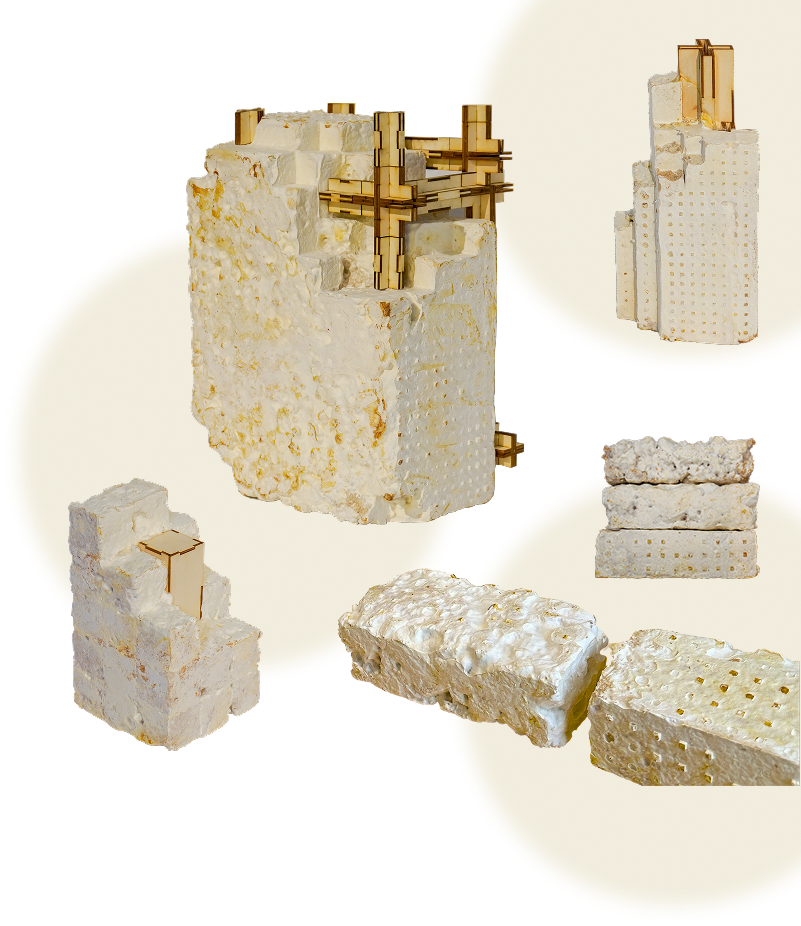

Mycologic
Mycelium is a living material. It continues to interact with its environment long after fabrication — responding to moisture, temperature, and seasonal change.
Mycologic is a monitoring platform for mycelium-based materials. Through environmental sensing, 3D scanning, and machine learning, it helps researchers read and record how the material behaves over time — tracking humidity, surface condition, and geometric change.
Built by Kecen Yi
